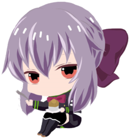

Hello, moi c'est Shinoa, je vais vous présenter le site alors suivez moi dans la Shinoamobile !
Je vous présente Otaku no Sekai !
C'est un discord communautaire, qui regroupe beaucoup de fan d'animé, manga et jeu vidéo.
Dans ce discord, nous parlons quotidiennement, de tous et de rien, il y fait beau vivre, les personnes présente
sont sympatique, agréable et parfois super drôle ! Enfin bref, pour le dire simplement, c'est un endroit rempli
de gens fan de la culture japonaise, et de gens normaux qui vienne simplement jeter un coup d'oeil, et reste en
fonction de ce qu'ils apprécient ou pas !
Notre serveur a été créé le 19 août 2020, et a vu une progression énorme en terme de membre et d'activité depuis. Aujourd'hui, nous regroupons au total 3 700 membres, et nous en sommes assez fier ! Mais, cela ne suffit pas, étant donné que le nombre cité avant ne représente pas le nombre de personne active. En tant que serveur communautaire, nous cherchons à nous aggrandir chaque jour, et pour ça, nous avons besoin de vous ! Rejoignez nous, nous faisons des activités organisé par notre staff, et nous nous amusons chaque jour ! Notre serveur est très mouvementé, de part la différence de chaque membre, et c'est pour ceci qu'il y a beaucoup de channel différent, afin de laisser part à chaque sujet. Nous disposons de beaucoup de grade différent, qui sont chacun doté d'une couleur également différente, il vous suffira juste d'exp en envoyons des messages ou en étant dans un channel vocal avec au moins une personne (autre qu'un bot, on vous vois les tricheurs !).
Pour la fin, je vais vous parler de nos chats divertissant/amusant.
Nous disposons de plusieurs chats " funny ", et je vais vous expliquer les plus amusants selon moi.
Tout d'abors, le chat " continue la phrase ", qui consite simplement à dire quelque mots, et laisser la personne
suivant poursuivre et voir ce que ça donne. Essayer, vous verrais que parfois, ça peut vite devenir marrant.
Ensuite, les chats " blind test et otaquizz ", qui ont la même utilité à quelque exception près, dans ces chats,
venez trouver des images flouté, ou bien découpé, et vous devrez trouver de qui il s'agit, ou bien reconnaître
à qui appartient cette voix, enfin bref, un tas de possibilité différente sont disponible.
Je vais maintenant parler du bot qui fais fureur, celui qui amuse tout le monde, il s'agit bien de MUDAE.
Pour avoir accès à ce bot, il faut être niveau 5, donc avoir été un minimum actif. Je vous rassure, le niveau
5 n'est pas compliqué à obtenir. Ce bot (MUDAE) permet de tirer au sort des personnages masculin ou féminin
en fonction de votre choix, et de pouvoir en amener un dans votre collection. L'objectif est d'avoir le plus
de personnage que vous appréciez dans votre collection. Chaque collection est reset au début de chaque mois
afin de laisser à tout le monde ses chances ! Ce bot fais également des petits jeux, comme des devinettes...